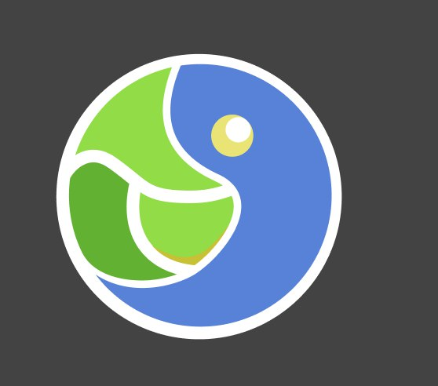

Clojure Brasil
Grupo no Telegram
Duvidas e discussões
Comece a aprender agora mesmo!
Website
Soma simples
Contador
[:ul [:li [:a {:target "_blank", :rel "noreferrer noopener", :href "https://t.me/clojurebrasil"} "Grupo no Telegram"]] [:li [:a {:target "_blank", :rel "noreferrer noopener", :href "https://github.com/clj-br/forum/discussions"} "Duvidas e discussões"]]]